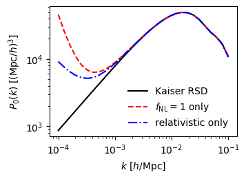

Modified Power Spectrum Multipoles¶
In this tutorial, we show how you can calculate the power spectrum multipole modifications due to primordial non-Gaussianity (PNG) \(f_\textrm{NL}\) and relativistic effects the clustering_modification module. The fiducial cosmology is Planck15, and we set the fiducial redshift \(z = 1\), fiducial linear bias \(b_1 = 2\) and fiducial \(f_\textrm{NL} = 1\).
[1]:
%%capture
# nbodykit matplotlib warnings suppression
from horizonground.clustering_modification import (
non_gaussianity_correction_factor, relativistic_correction_factor, standard_kaiser_factor
)
from horizonground.lumfunc_modeller import LumFuncModeller, quasar_PLE_lumfunc
from horizonground.utils import get_test_data_loc
from nbodykit.cosmology import LinearPower, Planck15
REDSHIFT = 1.
BIAS = 2.
PNG = 1.
We need a luminosity function model to compute relativistic biases.
[2]:
lumfunc_modeller = LumFuncModeller.from_parameter_file(
parameter_file=get_test_data_loc("eBOSS_QSO_LF_PLE_model_fits.txt"),
model_lumfunc=quasar_PLE_lumfunc,
brightness_variable='magnitude',
threshold_value=22.5,
cosmology=Planck15
)
We calculate the matter power spectrum, Kaiser multipoles and corrections factors for PNG and relativistic effects.
[3]:
import numpy as np
MULTIPOLE = 0
sample_wavenumbers = np.logspace(-4, -1, 30)
matter_power_spectrum = LinearPower(Planck15, REDSHIFT)(sample_wavenumbers)
kaiser_monopole = standard_kaiser_factor(MULTIPOLE, BIAS, REDSHIFT, cosmo=Planck15) * matter_power_spectrum
non_Gaussianity_monopole = kaiser_monopole + non_gaussianity_correction_factor(
sample_wavenumbers, MULTIPOLE, PNG, BIAS, REDSHIFT, cosmo=Planck15, tracer_p=1.6
) * matter_power_spectrum
relativistic_monopole = kaiser_monopole + relativistic_correction_factor(
sample_wavenumbers, MULTIPOLE, REDSHIFT, cosmo=Planck15,
geometric=True,
evolution_bias=lumfunc_modeller.evolution_bias,
magnification_bias=lumfunc_modeller.magnification_bias
) * matter_power_spectrum
Visualise the modified power spectrum.
[4]:
%matplotlib inline
import matplotlib.pyplot as plt
plt.figure(figsize=(3.5, 2.5), dpi=100)
plt.loglog(sample_wavenumbers, kaiser_monopole, ls='-', c='k', label="Kaiser RSD")
plt.loglog(sample_wavenumbers, non_Gaussianity_monopole, ls='--', c='r', label=r"$f_\mathrm{NL} = 1$ only")
plt.loglog(sample_wavenumbers, relativistic_monopole, ls='-.', c='b', label=r"relativistic only")
plt.legend(frameon=False)
plt.xlabel(r"$k$ [$h$/Mpc]")
plt.ylabel(r"$P_0(k)$ [$(\mathrm{Mpc}/h)^3$]")
plt.show()
